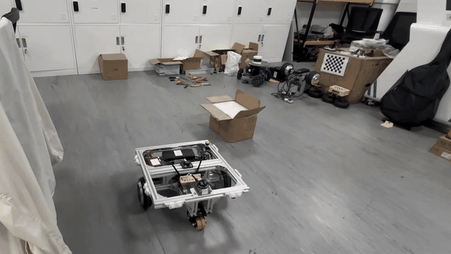
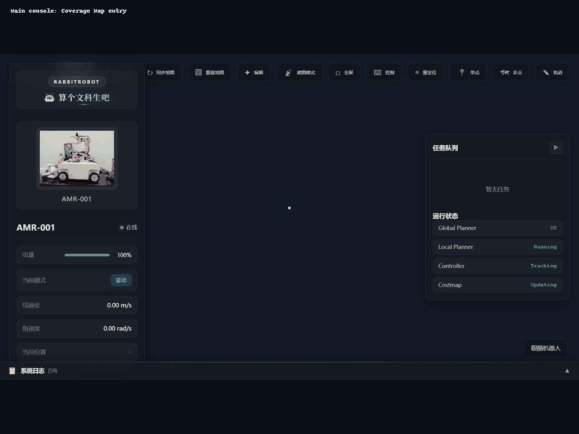

Main Platform
RabbitRobot Platform
真实 AMR 平台，覆盖自己装配的小车底盘、电机/传感器接入、导航、建图、Web 控制台和实验记录。它是我把 VLN、SLAM 和覆盖规划问题接到真车上的主入口。
Self-built AMR
Real-robot videos
控制工程硕士研究生·Robotics / VLN / AMR Systems
Research interests: Vision-Language Navigation, real-robot AMR systems, SLAM / mapping
I build research-grade AMR systems that connect VLN ideas to real robots.
你好，我是 Jinghai Li。我关注 Vision-Language Navigation、真实 AMR 系统和多传感器建图；RabbitRobot 小车从底盘装配、电控接线、传感器集成到 ROS 2 / Web 工具，都是我自己一点点搭起来的。
My homepage is a doorway: quick proof of who I am, what I study, what I have built, and where to find the detailed RabbitRobot work.

Research Profile
Vision-Language Navigation 关注语言目标如何落到真实空间行动。重点是长程任务中的偏航检测、语义子目标和恢复验证。
Real-robot AMR Systems 自己动手搭底盘、电控、传感器和 ROS 2 系统。目标是能跑、能测、能复盘。
SLAM and Multi-Sensor Fusion 为导航和 VLN 提供可靠地图与现场数据。关注 LiDAR、深度相机、IMU 与点云建图链路。
Toolchain: ROS 2, Nav2, SLAM, LiDAR, VLM, Web tools.
Three public entry points that show what I have built and how the VLN / AMR direction is grounded in real systems.

真实 AMR 平台，覆盖自己装配的小车底盘、电机/传感器接入、导航、建图、Web 控制台和实验记录。它是我把 VLN、SLAM 和覆盖规划问题接到真车上的主入口。

研究长程 VLN 中“走偏了如何发现、如何解释、如何恢复”的问题。展示从语言目标、视觉/地图 grounding 到真实 AMR 恢复验证的技术路线。

把地图、底盘 footprint、覆盖区域输入、路径校验、Web 3D 预览和驱动器 dry-run 放进一条可验证链路，强调 AMR 系统工程能力。
两个长期维护的公开入口，分别记录真实机器人平台和 AI 校园文化产品原型。